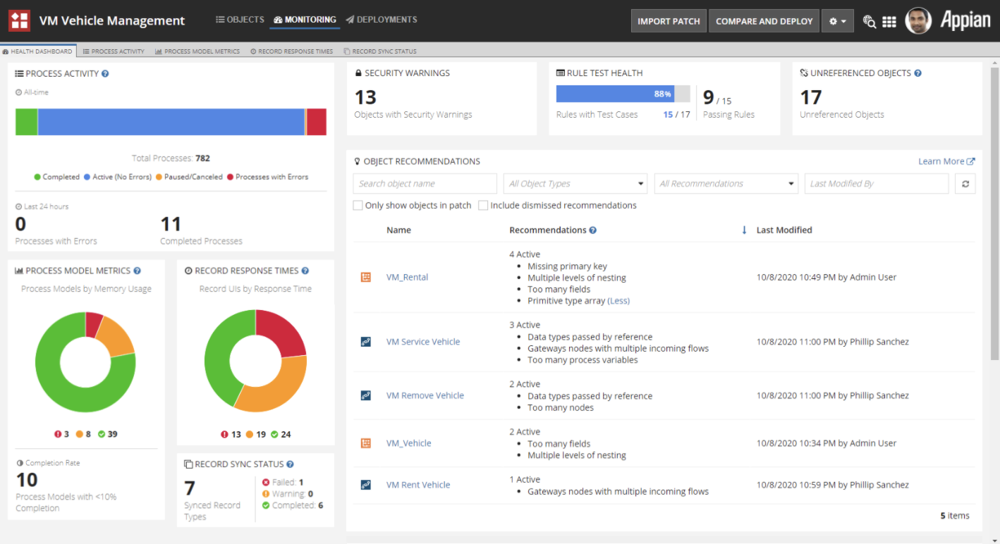
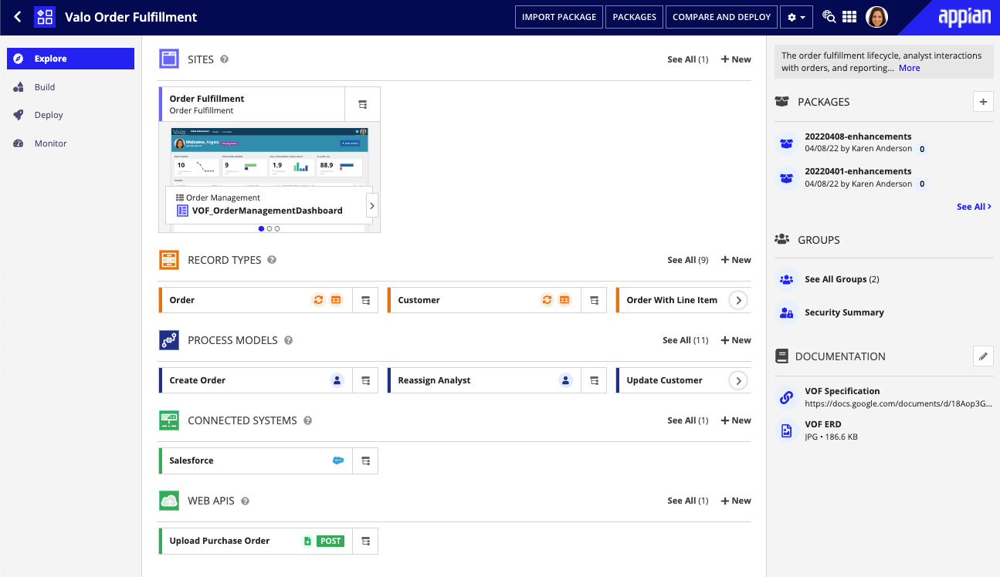
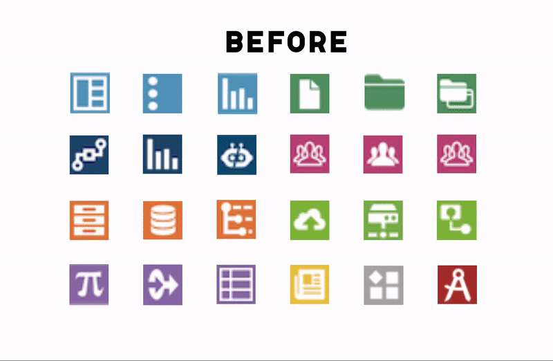
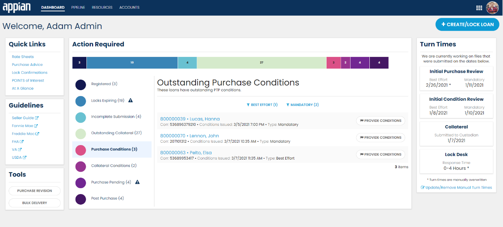
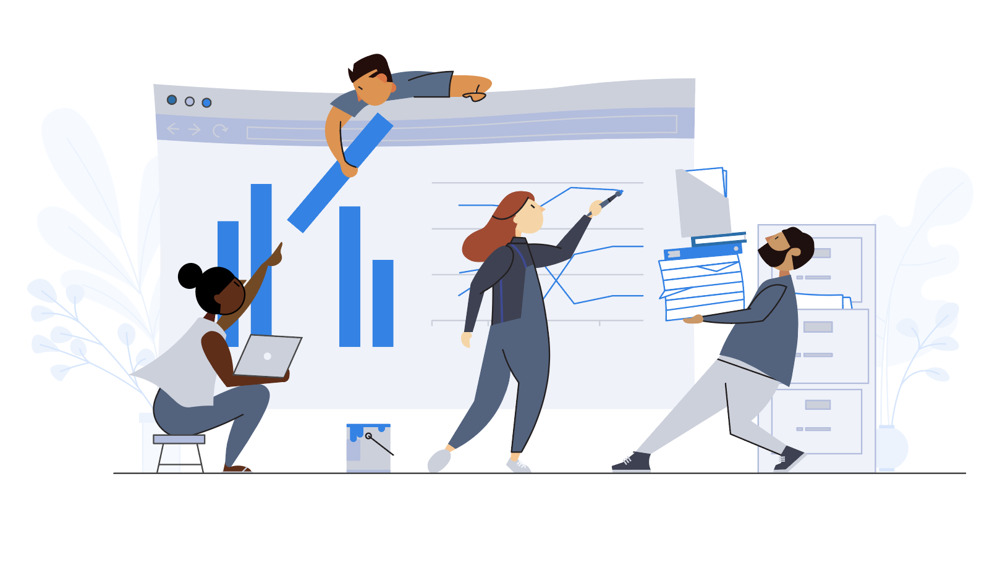

Appian Designer Transformed
I led the year-long UX design process for a transformed Appian developer experience that focused on new user comprehension. The vision included an "Explore" page, a place for Appian users to gain a high-level overview of an application, where I oversaw the close collaboration between designers and engineers to build the delightful custom functionality that made this "Explore" page a success.
Read about the improved UX

Icon Redesign
Following a corporate rebrand, I created new icons for the platform objects that followed our refreshed color palette and improved object recognition. The process involved cross-departmental communication to come up with a styling that both Design and Marketing liked
See our new objects

Collaborative Developer Experience
I led the UX design for a feature that greatly improved Appian developer collaboration in the product -- previously, developers worked in isolation on the platform and relied on third-party tools or in-person communication to stay up-to-date with each others' changes.
After countless rounds of user interviews and usability sessions, we shipped Collaborative Packages, which improved communication and visibility within teams in the product
Read the Release Notes
Centralized Health Dashboard & Guidance Tools
I designed the user experience behind a centralized dashboard that would help teams quickly understand the health of their application and easily take action to fix problems.
I particularly enjoyed working on a suite of features that guided users at every part of the development process -- from error alerting during coding to providing overall best practice feedback during review.
Watch the Release Notes Video

Streamlined UX and Modern UI for Customers
Outside of working on a platform team, I also collaborated with Customer Success teams on high-priority projects and advocated for best UX practices. Some sites I worked on won "Best UX" awards within the department

Illustrations built around Inclusivity
Illustrations are an industry standard as eye-catching visuals on tech platforms, but they also aid in storytelling and user experience by illustrating potentially complex concepts through a digestible metaphor.
I started a product illustration initiative to introduce graphics to the platform that not only added visual interest and enhanced user experience, but also promoted diversity and inclusivity - two values that are extremely important to myself and the company.
Read the Medium Article
View the Illustrations
Next Project
SuperBill